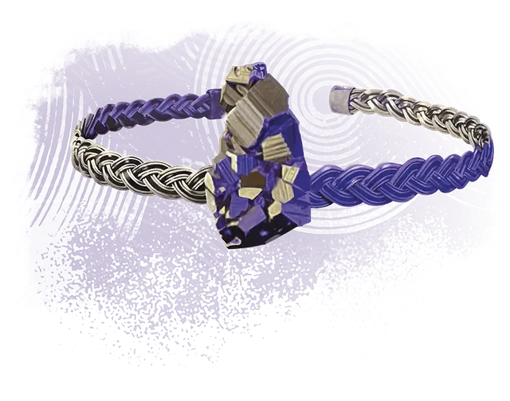

Обруч хранителя тайн
Secret Keeper's Circlet
Чудесный предмет, редкий (требуется настройка)

Рекомендованная стоимость 4 000 ЗМ
Этот обруч позволяет носителю стирать из своей памяти знание об определённом поступке или времени их жизни. Это полезно для тех, кто не доверяет магам прочищать свой разум магией.
Пока вы носите этот обруч, вы можете действием Магия определить условие, как например "когда я выйду из этого храма" или "когда я сотворю заклинание Поднятие мертвеца": если это условие выполняется в течение следующих 24 часов, обруч стирает все ваши воспоминания с момента определения этого условия до момента выполнения. Эти ваши воспоминания не может восстановить никакая магия, за исключением заклинания Желание. Как только вы используете это свойство, вы не можете сделать это снова до следующего рассвета.